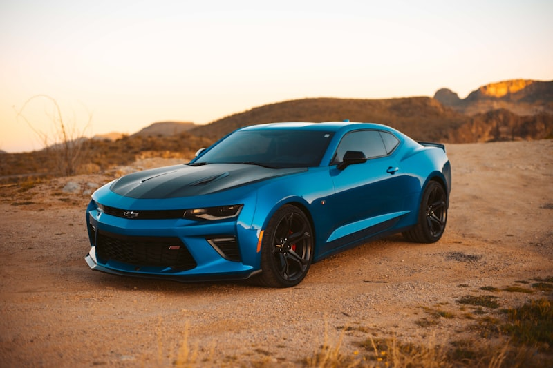

Chevrolet (Chevy) Repair & Service in Cedar Rapids
Your local Chevy specialists — every model, every repair.
Cedar Rapids Chevrolet Repair Experts
Chevrolet trucks and SUVs are built for Iowa roads, and Cedar Automotive keeps them running right. Whether you drive a Silverado 1500 that hauls every day, a Tahoe loaded with family, or a Colorado you take off-road on weekends, our technicians know these trucks inside and out. We handle everything from routine oil changes and brake jobs to complex engine and transmission repairs on every Chevy model.
Our shop sees Equinox and Traverse SUVs regularly for scheduled maintenance, brake service, and electrical diagnostics. We also service the Malibu sedan lineup, including the 2.4L Ecotec and 1.5T engines that have known maintenance needs. From basic fluid services to full drivetrain work, we keep your Chevrolet performing the way it should.
Cedar Automotive uses professional-grade GM diagnostic equipment to read manufacturer-specific fault codes, perform module programming, and access systems that generic scan tools miss. Located in Cedar Rapids near the regional airport, we offer same-day appointments for most Chevrolet services. No dealership markup — just honest, reliable Chevy repair.
Chevrolet Services We Provide
- Oil changes and fluid services (conventional, synthetic, Dexos-approved)
- Brake pad replacement, rotor resurfacing, and brake system repair
- Transmission service, fluid exchange, and rebuild
- Engine diagnostics, check engine light, and performance repair
- Electrical system diagnostics and wiring repair
- Suspension and steering repair (shocks, struts, ball joints, tie rods)
- AC recharge, compressor replacement, and climate control service
- 4WD and AWD system service (transfer case, front differential, actuators)
- Car key and key fob programming

Why Choose Cedar Automotive for Chevy Repair?
GM Diagnostic Equipment
Professional-grade scanners that read GM-specific codes and access modules generic tools cannot reach.
No Dealership Markup
Get dealer-quality Chevrolet repair at independent shop pricing. We quote upfront before any work begins.
All Chevy Models Welcome
Silverado, Equinox, Malibu, Traverse, Tahoe, Colorado, Trax, Camaro — every generation, every engine.
Common Chevrolet Issues We Fix
AFM / DFM Lifter Failure
Active Fuel Management and Dynamic Fuel Management systems are common failure points on Silverado, Tahoe, and other V8-equipped Chevrolets. Collapsed lifters cause misfires, ticking noises, and check engine lights. We diagnose and repair AFM/DFM lifter issues and can install AFM delete kits when appropriate.
Transmission Shudder (8-Speed & 9-Speed)
The 8L90 and 9T50 transmissions used in many late-model Chevrolets are known for shudder and harsh shifting, especially at low speeds. Cedar Automotive performs transmission fluid flushes with the correct GM-spec fluid and addresses valve body and torque converter issues to eliminate the shudder.
Intake Manifold Gasket Leak
Older Chevrolet V6 and V8 engines — particularly the 4.3L, 5.3L, and 3.1L/3.4L — are prone to intake manifold gasket failure. Symptoms include coolant leaks, overheating, and rough idle. We replace these gaskets and inspect for any related cooling system damage.
Oil Consumption (2.4L Ecotec)
The 2.4L Ecotec engine found in Equinox, Malibu, and Terrain models is known for excessive oil consumption caused by worn piston rings. We diagnose the root cause, monitor consumption, and perform engine repairs including piston ring replacement when necessary.
Power Steering Issues
Electric power steering failures and fluid leaks on hydraulic systems are common on Chevrolet trucks and SUVs. Whether it is a failing EPS motor, a leaking power steering pump, or worn steering rack, we diagnose and repair the steering system so it handles the way it should.
AC Condenser Failure
Chevrolet AC condensers — especially on Silverado, Equinox, and Traverse — are prone to developing leaks that cause the air conditioning to blow warm. We locate refrigerant leaks, replace condensers, and recharge the system to restore cold air.
Related Services
Frequently Asked Questions
How much does Chevrolet repair cost in Cedar Rapids?
Chevrolet repair costs vary by service. Cedar Automotive provides upfront estimates before any work begins so there are no surprises. Call (319) 450-7584 for a quote on your specific Chevy model.
Do you use OEM parts for Chevrolet repairs?
We offer both OEM and high-quality aftermarket parts for Chevrolet repairs. We discuss your options and preferences before ordering parts so you can choose what fits your budget and needs.
Can you service newer Chevrolet models with advanced electronics?
Yes. Cedar Automotive carries professional-grade diagnostic equipment capable of reading GM-specific fault codes and programming modules on newer Chevrolet vehicles, including advanced driver-assist and infotainment systems.
Do you program Chevrolet keys and fobs?
Yes — we program Chevrolet keys and key fobs for all models including Silverado, Equinox, Malibu, Traverse, and Tahoe. We handle transponder key programming, proximity fob replacement, and all-keys-lost situations at a fraction of dealer cost. Call (319) 450-7584 for pricing.